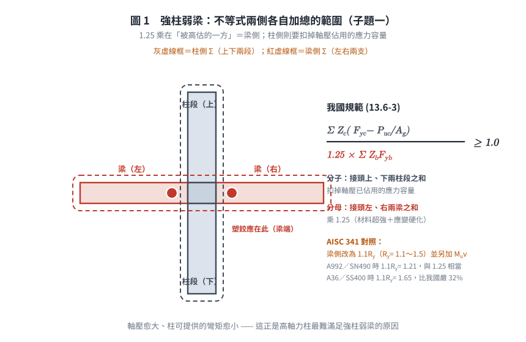
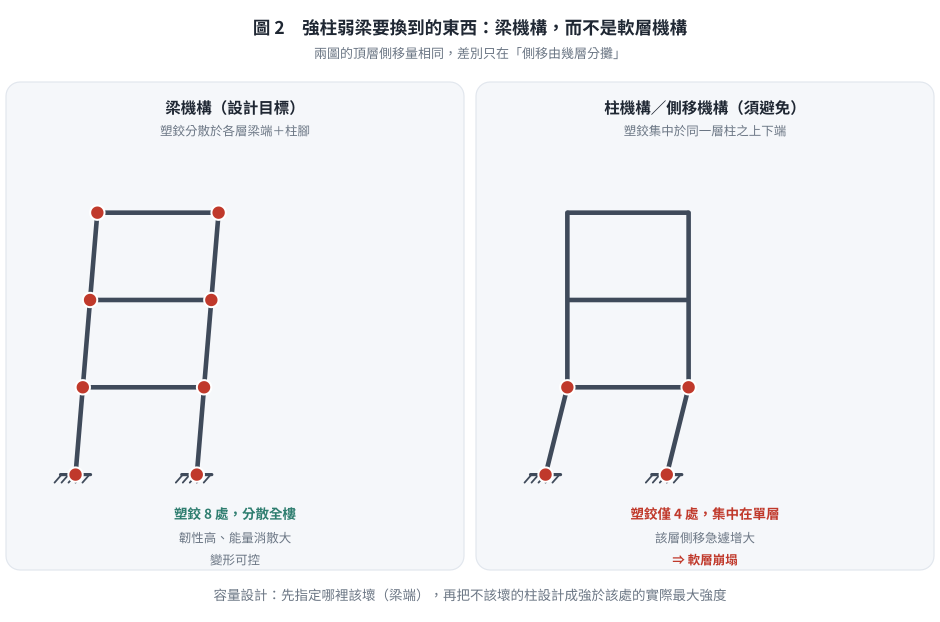
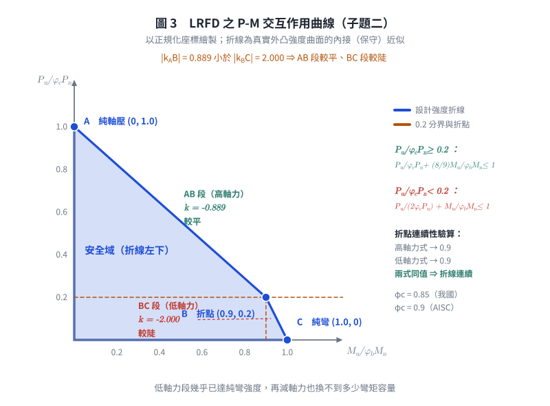

考題編號：SS-2009-1
主分類： SD-U3-1 結構耐震設計
副分類： SS-U1-3 梁柱桿件
設計法： LRFD
標籤： 強柱弱梁 梁柱彎矩強度比 P-M互制 耐震設計 韌性抗彎矩構架 SMRF 容量設計 P-M互制曲線 交互作用方程式 我國規範13.6.5 折線斜率
1. 原始題目重述 (Problem Restatement)
原卷逐字：「如右圖所示鋼結構建築之梁柱構材示意圖，試回答以下問題：
(一) 進行鋼骨建築耐震設計時，依據我國鋼結構極限設計法規範，說明如何滿足強柱弱梁（Strong Column Weak Beam）之梁柱彎矩強度比（Moment Strength Ratio）之要求？（10 分）
(二) 對於鋼結構建築之鋼柱，依據我國鋼結構極限設計法規範，繪出鋼柱受軸壓力（P）與單軸向彎矩（M）共同作用下之交互作用曲線圖（P-M Interaction Curve）。（15 分）」
⚠️ 兩小題都明寫「依據我國規範」。子題(一) 必須寫我國規範第 13.6.5 節之式 (13.6-3)，而不是 AISC 341 的 $\sum M^_{pc}/\sum M^_{pb}$ 形式——兩者差異甚大（見 §4 一、與 §6）。

圖說：一般型梁柱接頭立面示意。H型柱（垂直）貫通，左右各有一 H型梁（水平），梁腹板以高拉力螺栓連結剪力板（shear tab），翼板採全滲透對接銲（CJP groove weld）。此為「韌性抗彎矩構架（SMRF）」之典型接頭型式。
2. 考題核心精神與出題者意圖 (Core Concepts & Examiner's Intent)
核心觀念：耐震容量設計——強柱弱梁與 P-M 互制
此題為 SMRF 耐震設計的核心概念題，測驗考生對「容量設計（Capacity Design）」原則的理解，以及鋼柱 LRFD 設計的 P-M 互制曲線（兩段折線型式）。容量設計的精髓：讓設計者能控制塑性鉸發生的位置（梁端，而非柱端），使整體構架在地震下具備穩定的能量消散機制。
出題者測驗重點：
- 強柱弱梁的物理意義：柱側彎矩強度恆大於梁側，確保塑性鉸在梁端形成（梁機構），而非柱端（層崩塌機構）
- 我國規範用「1.25」處理梁的超強：$\sum Z_c(F_{yc} - P_{uc}/A_g) \geq 1.25\sum Z_bF_{yb}$ —— 單一定值係數，不含 $R_y$、不含 $M_v$
- 柱側須扣軸力：$(F_{yc} - P_{uc}/A_g)$ 反映軸壓已消耗部分斷面的彎矩容量
- P-M 折點 B 在 $P = 0.2\phi_c P_n$：兩段折線是對真實 P-M 曲面的簡化；折點處兩式皆得 $M/\phi_bM_n = 0.9$，曲線連續
- 兩段斜率的大小關係：AB 段 $|{-}8/9|$ 較平、BC 段 $|{-}2|$ 較陡（常被寫反）
- $\phi_c = 0.85$ vs $\phi_b = 0.90$：軸壓不確定性較大（0.85），彎曲不確定性較小（0.90）
3. 解題戰略地圖與陷阱分析 (Strategic Roadmap & Trap Analysis)
作戰計畫：
(一) 強柱弱梁：
Step 1 寫出驗算不等式 ΣM*pc > ΣM*pb
Step 2 定義 M*pc = Zc(Fyc − Pu/Ag)（含軸力折減）
Step 3 定義 M*pb = Σ(1.1RyFybZb + Mv)（含超強與剪力附加彎矩）
(二) P-M 互制曲線：
Step 4 列出兩段公式（高軸力 Pu/φcPn ≥ 0.2，低軸力 < 0.2）
Step 5 計算 A、B、C 三個控制點（純壓、折點、純彎）
Step 6 繪製折線圖，標示兩段
陷阱分析：
| 陷阱 | 說明 | 對策 |
|---|---|---|
| ❶ 答錯規範 | 題目問「我國規範」，卻寫成 AISC 341 的 $1.1R_yF_{yb}Z_b + M_v$ | 我國式 (13.6-3) 用單一 1.25，無 $R_y$、無 $M_v$ |
| ❷ 1.25 放的位置 | 1.25 乘在梁側（被高估的一方），不是除在柱側 | $\sum Z_c(F_{yc}-P_{uc}/A_g) \geq \mathbf{1.25}\sum Z_bF_{yb}$ |
| ❸ 柱側忘記扣軸力 | 柱的彎矩容量須以 $(F_{yc} - P_{uc}/A_g)$ 折減 | 軸壓愈大、可用彎矩愈小 |
| ❹ 折點 B 的 P 值 | 折點在 $P = 0.2\phi_c P_n$，而非 $0.5\phi_c P_n$ | 代入兩段公式驗算折點相等（皆得 0.9） |
| ❺ 兩段斜率寫反 | AB 段（高軸力）斜率 $-8/9$、較平；BC 段（低軸力）斜率 $-2$、較陡 | 由三控制點 A(0,1)、B(0.9,0.2)、C(1,0) 直接算斜率 |
| ❻ $\phi_c$ 與 $\phi_b$ 搞混 | 軸壓：$\phi_c = 0.85$；彎曲：$\phi_b = 0.90$ | 壓力折減較嚴（0.85） |
| ❼ 例外條款 | 屋頂層柱頂、低軸壓比柱等有免驗規定 | 規範明文例外，答題時需提及 |
3.5 變數層次分析（Variable Hierarchy Analysis）
複習提示：解題後，在每個卡住的知識點「卡關?」欄標記
⚠；第二次複習時只看有⚠的項目。
最終目標： （一）寫出我國規範式 (13.6-3) 之強柱弱梁不等式 $\dfrac{\sum Z_c(F_{yc}-P_{uc}/A_g)}{1.25\sum Z_bF_{yb}} \geq 1.0$ 並說明各項與計算流程；（二）繪出 LRFD P-M 互制折線（A-B-C，折點在 $P_u = 0.2\phi_cP_n$、$M_u = 0.9\phi_bM_n$，AB 段斜率 $-8/9$ 較平、BC 段 $-2$ 較陡）
主要公式（$\boxed{\phantom{x}}$ = 未知，待推導）
$$\text{(一) 我國規範 (13.6-3)：}\quad \frac{\sum Z_c!\left(F_{yc} - \dfrac{P_{uc}}{A_g}\right)}{1.25 \sum Z_b F_{yb}} \ \geq\ 1.0$$
$$\text{（等價寫法）}\quad \sum Z_c!\left(F_{yc} - \frac{P_{uc}}{A_g}\right) \ \geq\ 1.25 \sum Z_b F_{yb}$$
$$\text{(二) 高軸力段：} \frac{P_u}{\phi_c P_n} + \frac{8}{9}\cdot\frac{M_u}{\phi_b M_n} \leq 1.0 \quad \left(\frac{P_u}{\phi_c P_n} \geq 0.2\right)$$
$$\text{低軸力段：} \frac{P_u}{2\phi_c P_n} + \frac{M_u}{\phi_b M_n} \leq 1.0 \quad \left(\frac{P_u}{\phi_c P_n} < 0.2\right)$$
L1：題目直接給定
| 符號 | 數值 | 說明 |
|---|---|---|
| 規範 | 我國鋼結構極限設計法（LRFD） | |
| 結構型式 | 韌性抗彎矩構架（SMRF） | |
| 附圖 | 典型 H 型梁柱接頭（CJP 銲接翼板 + 螺栓腹板） | |
| 子題(一) | 說明強柱弱梁計算方法（概念題，10 分） | |
| 子題(二) | 繪 P-M 互制曲線（15 分） |
L2：需知識點推導
Step 1（一）：強柱弱梁不等式各項定義
| 符號 | 公式 / 來源 | 卡關? |
|---|---|---|
| 柱側（分子） | $\sum Z_c!\left(F_{yc} - P_{uc}/A_g\right)$ —— 接頭上下兩柱段各代入自己的 $P_{uc}$ | |
| 梁側（分母） | $1.25 \sum Z_bF_{yb}$ —— 接頭左右兩梁；1.25 為梁之超強係數 | |
| $Z_c$ / $Z_b$ | 柱／梁之塑性斷面模數（強軸） | |
| $P_{uc}$ | 所需之柱軸向受壓強度（含地震組合） | |
| $A_g$ | 柱全斷面積 | |
| 為何柱要扣 $P_{uc}/A_g$ | 軸壓已佔用部分斷面應力容量，可用的彎矩應力只剩 $F_{yc} - P_{uc}/A_g$ ⚠ 常見卡關 | |
| 為何梁要乘 1.25 | 鋼材實際降伏強度高於標稱值、加上應變硬化 → 梁端實際塑性彎矩會超過 $Z_bF_{yb}$ |
Step 2（一）：計算流程
| 符號 | 公式 / 來源 | 卡關? |
|---|---|---|
| 步驟 ① | 對接頭上、下兩柱段各算 $Z_c(F_{yc} - P_{uc}/A_g)$ 後相加 | |
| 步驟 ② | 對接頭左、右兩梁各算 $Z_bF_{yb}$ 後相加，再乘 1.25 | |
| 步驟 ③ | 驗算 $\dfrac{①}{②} \geq 1.0$ | |
| 步驟 ④ | 若不滿足 → 加大柱斷面（提高 $Z_c$）或減小梁斷面（降低 $Z_b$） | |
| 免驗情形 | 屋頂層柱頂；$P_{uc}/(F_{yc}A_g)$ 低於規定值（約 0.3）且符合特定條件者 |
Step 3（二）：P-M 互制曲線三個控制點
| 符號 | 公式 / 來源 | 卡關? |
|---|---|---|
| 點 A（純軸壓） | $(P_u, M_u) = (\phi_c P_n, 0)$ | |
| 點 B（折點） | $(P_u, M_u) = (0.2\phi_c P_n, 0.9\phi_b M_n)$（兩段公式交界） | |
| 點 C（純彎） | $(P_u, M_u) = (0, \phi_b M_n)$ | |
| 折點驗算 | 高軸力段：$0.2 + (8/9)(0.9) = 1.0$ ✓；低軸力段：$0.1 + 0.9 = 1.0$ ✓ |
L3：深層知識（不懂就卡住）
| 知識點 | 說明 | 補強頁 | 卡關? |
|---|---|---|---|
| P-M 互制 / H1-1a vs H1-1b | 折點在 $P = 0.2\phi_c P_n$；高軸力段斜率陡，低軸力段斜率平 | [[pm-interaction]] · [[BEAM-COLUMN-INTERACTION]] | |
| $\phi_c = 0.85$ vs $\phi_b = 0.90$ | 軸壓不確定性較高用 0.85；彎曲不確定性較低用 0.90 | [[pm-interaction]] | |
| 我國 1.25 vs AISC $1.1R_y$ | 我國用單一定值 1.25；AISC 341 用 $1.1R_y$（$R_y$ 依鋼種 1.1～1.5）。A992／SN490（$R_y=1.1$）時 $1.1R_y = 1.21 \approx 1.25$，兩者相當；但 A36／SS400（$R_y=1.5$）時 AISC 為 $1.65$，遠比我國嚴 | ||
| 我國式不含 $M_v$ | AISC 341 之 $\sum M^*_{pb}$ 另加 $M_v$（塑鉸至柱中心線之剪力附加矩），我國式無此項 → 我國之梁側需求較小 | ||
| 強柱弱梁的例外 | ①屋頂層柱頂（上方無柱，不會形成柱機構）；②柱軸壓比 $P_{uc}/(F_{yc}A_g)$ 甚低者；③該層側向剪力強度較下層增加達規定比例者 | ||
| P-M 折線兩段斜率 | 由 A$(0,1)$、B$(0.9,0.2)$、C$(1,0)$（正規化座標）直接算：$k_{AB} = -0.8/0.9 = -8/9$（平）、$k_{BC} = -0.2/0.1 = -2$（陡）。AB 平、BC 陡 | [[pm-interaction]] | |
| 容量設計（Capacity Design）原則 | 控制塑性鉸位置（梁端）→ 梁機構（全局）vs 側移機構（局部層崩塌） | ||
| $M_v$ 的必要性 | 塑性鉸位置通常不在柱面（有 RBS 或加強板），剪力引起的附加矩 $V_u s_h$ 不可省略 |
4. 步驟化詳細計算過程 (Step-by-Step Calculation)
一、強柱弱梁之彎矩強度比要求
1.1 設計目的
強柱弱梁（SCWB）原則屬「容量設計（Capacity Design）」的核心概念：確保地震時塑性鉸優先在梁端形成，而非柱端，使整體構架具備穩定的能量消散機制（梁機構），避免因柱形成塑鉸而導致樓層崩塌（側移機構）。
1.2 規範要求（韌性抗彎矩構架 SMRF）
我國「鋼結構極限設計法規範及解說」第十三章 耐震設計、第 13.6.5 節「梁柱彎矩強度比」規定：「任何梁柱接頭應滿足下式：」
$$\boxed{\frac{\displaystyle\sum Z_c!\left(F_{yc} - \frac{P_{uc}}{A_g}\right)}{1.25 \displaystyle\sum Z_b F_{yb}} \ \geq\ 1.0} \qquad (13.6\text{-}3)$$
等價寫法：
$$\sum Z_c!\left(F_{yc} - \frac{P_{uc}}{A_g}\right) \ \geq\ 1.25 \sum Z_b F_{yb}$$
| 符號 | 規範定義 |
|---|---|
| $Z_c$ | 柱斷面塑性模數 |
| $F_{yc}$ | 柱鋼材之標稱降伏強度 |
| $P_{uc}$ | 所需之柱軸向受壓強度 |
| $A_g$ | 柱全斷面積 |
| $Z_b$ | 梁斷面塑性模數 |
| $F_{yb}$ | 梁鋼材之標稱降伏強度 |
| $\sum$ | 柱側：接頭上、下兩柱段之和；梁側：接頭左、右兩梁之和 |
⚠️ 來源註記：本式引自 rootlaw 之官方 PDF（第十三章）。該 PDF 之文字層已破損，兩次獨立擷取對「分子／分母／1.25 的位置」給出互相矛盾的排列（其中一種為 $1.25 \geq$ 比值，物理上不可能——那等於要求柱比梁弱）。本頁依強柱弱梁的物理意義（柱側必須大於梁側）確定上式之不等號方向，並與 AISC 341 的 $\sum M^_{pc}/\sum M^_{pb} > 1.0$ 結構對照確認。建議以紙本規範第十三章覆核。
1.3 兩側各自的物理意義
柱側（分子）—— 扣除軸力後的可用彎矩容量：
$$Z_c\left(F_{yc} - \frac{P_{uc}}{A_g}\right)$$
柱同時承受軸壓與彎矩。斷面的應力容量 $F_{yc}$ 已被軸應力 $f_a = P_{uc}/A_g$ 佔用一部分，剩下 $(F_{yc} - f_a)$ 才能用來抵抗彎矩。軸壓愈大，柱可提供的彎矩強度愈小 —— 這正是高軸力柱容易先形成塑鉸的原因，也是規範要求扣除的理由。
梁側（分母）—— 乘 1.25 反映梁的實際超強：
$$1.25 \sum Z_b F_{yb}$$
梁端塑鉸的實際彎矩會超過 $Z_bF_{yb}$，原因有二：
1. 材料超強：鋼材實際降伏強度普遍高於標稱值（$F_{y,actual} > F_y$）；
2. 應變硬化：塑鉸轉動後應力進入硬化段，超過降伏強度。
我國規範以單一定值 1.25 涵蓋這兩項；AISC 341 則拆成 $1.1 \times R_y$（$1.1$ 為應變硬化、$R_y$ 為材料超強，依鋼種 1.1～1.5）。

圖 1 不等式兩側各自加總的範圍。1.25 乘在被高估的一方＝梁側，柱側則要扣掉軸壓已佔用的應力容量；這張圖攔的是 $\sum$ 範圍取錯（柱是上下、梁是左右）與把 1.25 除到柱側。
1.4 計算流程
① 柱側：對接頭上、下兩柱段各算 Zc(Fyc − Puc/Ag)，相加
② 梁側：對接頭左、右兩梁各算 Zb·Fyb，相加後乘 1.25
③ 驗算：①/② ≥ 1.0
④ 不滿足 → 加大柱斷面（↑Zc）／減小梁斷面（↓Zb）／降低柱軸力
免驗（例外）情形：
- 屋頂層柱頂：其上方無柱，不會形成貫穿樓層的柱機構
- 柱軸壓比甚低者：$P_{uc}/(F_{yc}A_g)$ 低於規定值（約 0.3）且符合特定條件
- 該層之側向剪力強度相對下層有足夠增量者
⚠️ 例外條款之確切數值門檻同受前述 PDF 文字層破損影響，僅能確認量級（約 0.3、約 50%），建議以紙本覆核。
1.5 為何要「強柱弱梁」——兩種崩塌機構的對比
| 機構 | 塑鉸位置 | 韌性 | 後果 |
|---|---|---|---|
| 梁機構（Beam mechanism，目標） | 各層梁端 | 高 | 塑鉸數量多、分散全樓，能量消散大，變形可控 |
| 柱機構／側移機構（Sway mechanism，須避免） | 同一層柱之上下端 | 低 | 塑鉸集中於單層，該層側移急遽增大 → 軟層崩塌 |
強柱弱梁的本質是容量設計（Capacity Design）：先指定「哪裡該壞」（梁端），再把不該壞的構件（柱）設計成強度大於「該壞處的實際最大強度」。

圖 2 強柱弱梁要換到的東西。兩格的頂層側移量相同，差別只在側移由幾層分攤；這張圖攔的是把強柱弱梁當成條文背誦，而說不出「為什麼柱端出鉸就是軟層崩塌」。
二、P-M 交互作用曲線圖
2.1 LRFD 交互作用方程式
鋼柱在軸壓力 $P_u$ 與單軸彎矩 $M_u$ 共同作用下，依規範：
當 $\dfrac{P_u}{\phi_c P_n} \geq 0.2$（高軸力段）：
$$\frac{P_u}{\phi_c P_n} + \frac{8}{9} \cdot \frac{M_u}{\phi_b M_n} \leq 1.0$$
當 $\dfrac{P_u}{\phi_c P_n} < 0.2$（低軸力段）：
$$\frac{P_u}{2\phi_c P_n} + \frac{M_u}{\phi_b M_n} \leq 1.0$$
2.2 關鍵控制點
| 點 | $P_u$ | $M_u$ | 說明 |
|---|---|---|---|
| A | $\phi_c P_n$ | $0$ | 純軸壓（無彎矩） |
| B（折點） | $0.2\, \phi_c P_n$ | $0.9\, \phi_b M_n$ | 兩段公式交界處 |
| C | $0$ | $\phi_b M_n$ | 純彎矩（無軸壓） |
折點 B 之連續性驗算（兩式在 $P_u/\phi_cP_n = 0.2$ 處必須給出同一個 $M_u$）：
高軸力式：$0.2 + \dfrac{8}{9}\dfrac{M_u}{\phi_bM_n} = 1.0 \Rightarrow \dfrac{M_u}{\phi_bM_n} = \dfrac{0.8 \times 9}{8} = \mathbf{0.9}$
低軸力式：$\dfrac{0.2}{2} + \dfrac{M_u}{\phi_bM_n} = 1.0 \Rightarrow \dfrac{M_u}{\phi_bM_n} = 1.0 - 0.1 = \mathbf{0.9}$ ✓
兩式同得 0.9 ⇒ 折線在 B 點連續（這正是 $8/9$ 與 $1/2$ 這兩個係數被選定的原因）。
2.3 兩段的斜率（⚠️ 大小關係常被寫反）
以正規化座標 $\bar{M} = M_u/\phi_bM_n$（橫軸）、$\bar{P} = P_u/\phi_cP_n$（縱軸）表示三控制點：
$$A(0,\ 1.0), \qquad B(0.9,\ 0.2), \qquad C(1.0,\ 0)$$
$$k_{AB} = \frac{0.2 - 1.0}{0.9 - 0} = \frac{-0.8}{0.9} = -\frac{8}{9} = -0.889$$
$$k_{BC} = \frac{0 - 0.2}{1.0 - 0.9} = \frac{-0.2}{0.1} = -2.000$$
$$|k_{AB}| = 0.889 \ < \ |k_{BC}| = 2.000$$
$$\Rightarrow \boxed{\text{AB 段（高軸力）較「平」；BC 段（低軸力）較「陡」}}$$
未正規化時：$\dfrac{dP}{dM}\Big|{AB} = -\dfrac{8}{9}\dfrac{\phi_cP_n}{\phi_bM_n}$、$\dfrac{dP}{dM}\Big|$} = -2\dfrac{\phi_cP_n}{\phi_bM_n
幾何直觀： 從 A 走到 B，$\bar M$ 增加 0.9 而 $\bar P$ 只降 0.8（走得「橫」）；從 B 走到 C，$\bar M$ 只增加 0.1 而 $\bar P$ 又降 0.2（走得「直」）。低軸力段幾乎已達純彎強度，再減軸力也換不到多少彎矩容量。
2.4 P-M 交互作用曲線圖

圖 3 兩段折線的斜率大小關係。三個控制點由 8/9 與 1/2 兩係數算出（兩式在 $\bar P = 0.2$ 處皆得 0.9，故折線連續）；這張圖攔的是把 AB 與 BC 的陡平寫反。
Pu/φcPn
1.0 ┤● A（純軸壓，Mu = 0）
│ ╲
│ ╲ AB 段：斜率 −8/9（較平）
│ ╲ Pu/φcPn + (8/9)Mu/φbMn = 1.0
│ ╲
│ ╲
│ ╲
0.2 ┤─ ─ ─ ─ ─ ─ ─● B（折點：0.9, 0.2）
│ │╲ BC 段：斜率 −2（較陡）
│ 安全域 │ ╲ Pu/(2φcPn) + Mu/φbMn = 1.0
│ （左下） │ ╲
0 ┼──────────────┴───● C（純彎矩，Pu = 0）
0 0.9 1.0 Mu/φbMn
P-M 曲線特性：
| 特性 | 說明 |
|---|---|
| 整體形狀 | 兩段直線，折點在 $P_u = 0.2\phi_cP_n$、$M_u = 0.9\phi_bM_n$ |
| 上段（AB） | 軸力主導；斜率 $-\frac{8}{9}\frac{\phi_cP_n}{\phi_bM_n}$，絕對值較小 → 較平 |
| 下段（BC） | 彎矩主導；斜率 $-2\frac{\phi_cP_n}{\phi_bM_n}$，絕對值較大 → 較陡 |
| 折點連續性 | 兩式在 B 點皆得 $M_u/\phi_bM_n = 0.9$，曲線連續但不平滑（有轉折） |
| 安全域 | 折線左下方（含折線本身）為安全，右上方不安全 |
| 與真實曲面之關係 | 真實 P-M 強度為外凸曲線；兩段折線是其內接（保守）近似 |
5. 結果彙整與驗算 (Summary & Verification)
強柱弱梁要求彙整（我國規範 13.6-3）：
$$\frac{\sum Z_c!\left(F_{yc} - P_{uc}/A_g\right)}{1.25\sum Z_bF_{yb}} \geq 1.0$$
P-M 互制曲線彙整：
$$\frac{P_u}{\phi_c P_n} \geq 0.2: \quad \frac{P_u}{\phi_c P_n} + \frac{8}{9}\frac{M_u}{\phi_b M_n} \leq 1.0$$
$$\frac{P_u}{\phi_c P_n} < 0.2: \quad \frac{P_u}{2\phi_c P_n} + \frac{M_u}{\phi_b M_n} \leq 1.0$$
觀念精析：
為何梁側要乘 1.25？ 鋼材實際降伏強度（$F_{y,actual}$）通常高於標稱值（$F_y$）且具隨機性，加上塑鉸轉動後的應變硬化，梁端實際塑性彎矩會超過 $Z_bF_{yb}$。若只用 $Z_bF_{yb}$ 估計，會低估梁端的真實強度，導致柱仍可能先降伏、形成不希望的柱機構。我國以單一定值 1.25 涵蓋這兩項效應。
為何柱側要扣 $P_{uc}/A_g$？ 柱斷面的應力容量已被軸壓佔用 $f_a = P_{uc}/A_g$，剩餘 $(F_{yc} - f_a)$ 才能抵抗彎矩。這是強柱弱梁在「高軸力柱」時最難滿足的原因。
P-M 折點為何在 $P = 0.2\phi_cP_n$？ 為了以兩段直線內接近似真實的外凸 P-M 強度曲面。低軸力時彎矩主導、行為近似梁；高軸力時軸壓主導、整體穩定控制。折點位置與 $8/9$、$1/2$ 兩個係數是配套選定的，使折線在 B 點連續（兩式皆得 $M_u/\phi_bM_n = 0.9$）。
兩段斜率的大小：$|k_{AB}| = 8/9 = 0.889 < |k_{BC}| = 2$ ⇒ AB 段較平、BC 段較陡。前版此處敘述顛倒（誤稱 AB 較陡、$k_{AB} = -9/8$），已更正。
$\phi_c = 0.85$（軸壓不確定性較高、破壞較突然）vs $\phi_b = 0.90$（彎曲不確定性較低、破壞前有明顯變形警示）。
6. 依最新規範（AISC 341-16／-22 與 AISC 360-16）對照
主答依據：兩小題均明示「依據我國鋼結構極限設計法規範」。子題(一) 依第十三章 13.6.5 節式 (13.6-3)；子題(二) 依第 8.2 節式 (8.2-1a)／(8.2-1b)。以 AISC 為基礎之台灣修訂版尚未發布，本節僅列對照。
6.1 子題(一)：強柱弱梁 —— 我國 vs AISC 341
| 項目 | 我國規範 (13.6-3) | AISC 341-16／-22 §E3.4a（式 E3-1） |
|---|---|---|
| 不等式 | $\dfrac{\sum Z_c(F_{yc}-P_{uc}/A_g)}{1.25\sum Z_bF_{yb}} \geq 1.0$ | $\dfrac{\sum M^_{pc}}{\sum M^_{pb}} > 1.0$ |
| 柱側 | $\sum Z_c!\left(F_{yc} - \dfrac{P_{uc}}{A_g}\right)$ | $\sum M^*{pc} = \sum Z_c!\left(F\right)$（$\alpha_s$：LRFD 1.0／ASD 1.5）} - \dfrac{\alpha_s P_{rc}}{A_g |
| 梁側 | $\mathbf{1.25}\sum Z_bF_{yb}$（單一定值） | $\sum M^*{pb} = \sum\left(\mathbf{1.1R_yF\right)$}Z_b} + M_{uv |
| 材料超強 | 併入 1.25 | 顯式 $R_y$（依鋼種：A992／SN490 = 1.1；A36／SS400 = 1.5） |
| 應變硬化 | 併入 1.25 | 顯式 $1.1$ |
| 剪力附加矩 $M_{uv}$ | 無此項 | 有：塑鉸位置至柱中心線之 $V \times s_h$ |
| ASD 雙軌 | 無（規範為 LRFD 單一格式） | 有（$\alpha_s$） |
三個實質差異：
-
梁側係數：A992／SN490 時 $1.1R_y = 1.1 \times 1.1 = \mathbf{1.21}$，與我國 1.25 幾乎相同（我國略嚴 3%）。但 A36／SS400（$R_y = 1.5$）時 AISC 為 $1.1 \times 1.5 = \mathbf{1.65}$，比我國嚴 32%。⇒ 我國的 1.25 是以高強度鋼（$R_y \approx 1.1$）為前提訂的；用低降伏比鋼材時，我國式偏寬鬆。
-
$M_{uv}$：AISC 把塑鉸從柱面外移（RBS 減弱斷面梁、或加強板接頭）後，塑鉸彎矩要「投影」回柱中心線，故需加 $V \times s_h$。我國式無此項，對 RBS 接頭偏不保守。
-
投影 vs 直接乘積：AISC 的 $M^*$ 定義為「投影至柱中心線之彎矩強度」，可容納加勁板、覆蓋板、AISC 358 的 $M_{pr}$ 等；我國式直接寫在 $Z \cdot F$ 乘積上，彈性較小。
6.2 子題(二)：P-M 互制曲線 —— 兩規範完全相同
| 項目 | 我國 (8.2-1a)／(8.2-1b) | AISC 360-16 §H1.1（H1-1a／H1-1b） | 差異 |
|---|---|---|---|
| 高軸力式 | $\dfrac{P_u}{\phi P_n} + \dfrac{8}{9}\left(\dfrac{M_{ux}}{\phi_bM_{nx}} + \dfrac{M_{uy}}{\phi_bM_{ny}}\right) \leq 1.0$ | $\dfrac{P_r}{P_c} + \dfrac{8}{9}\left(\dfrac{M_{rx}}{M_{cx}} + \dfrac{M_{ry}}{M_{cy}}\right) \leq 1.0$ | 形式相同 |
| 低軸力式 | $\dfrac{P_u}{2\phi P_n} + \left(\cdots\right) \leq 1.0$ | $\dfrac{P_r}{2P_c} + \left(\cdots\right) \leq 1.0$ | 形式相同 |
| 分界 | $P_u/\phi P_n = 0.2$ | $P_r/P_c = 0.2$ | 相同 |
| 折點 B | $(0.9\phi_bM_n,\ 0.2\phi_cP_n)$ | 同 | 相同 |
| 兩段斜率 | $-8/9$（平）、$-2$（陡） | 同 | 相同 |
| $\phi_c$ | 0.85 | 0.90 | 曲線的 $P$ 軸截距 AISC 高 5.9% |
⇒ P-M 折線的「形狀」兩規範完全一致（同樣的 0.2 分界、同樣的 8/9 與 1/2 係數、同樣的兩段斜率）；唯一差別是 $\phi_c$ 使 A 點（$P$ 軸截距）位置不同。
AISC 360 另提供 §H1.3 之選項：對雙軸對稱斷面、若強弱軸的挫屈型態不同，可分別驗算「平面內」與「平面外」，通常比 H1-1a 更省。我國 2010 規範無此對應條文。
6.3 對照結論
| 子題 | 我國規範（主答） | AISC | 差異 |
|---|---|---|---|
| (一) 不等式形式 | $\dfrac{\text{柱側}}{1.25 \times \text{梁側}} \geq 1.0$ | $\dfrac{\sum M^_{pc}}{\sum M^_{pb}} > 1.0$ | 等價結構 |
| (一) 梁側超強 | 1.25（定值） | $1.1R_y$（1.21～1.65） | 低降伏比鋼材時 AISC 嚴 32% |
| (一) $M_{uv}$ | 無 | 有 | 我國對 RBS 偏不保守 |
| (二) 折線形狀 | 0.2 分界、$8/9$、$1/2$ | 同 | 無 |
| (二) $\phi_c$ | 0.85 | 0.90 | A 點高 5.9% |
作答建議： 題目兩次明寫「依據我國規範」，子題(一) 必須寫 (13.6-3) 的 1.25 形式；若寫成 AISC 的 $1.1R_yF_{yb}Z_b + M_{uv}$ 屬答錯規範。可在末尾補一句「AISC 341 另以 $1.1R_y$ 與 $M_{uv}$ 分項處理，對低降伏比鋼材與 RBS 接頭較我國嚴格」，屬加分。
修正日期：2026-08-22（重大勘誤：①子題(一) 原解析寫的是 AISC 341 的 $\sum M^_{pc}/\sum M^{pb}$、$1.1R_yFZ_b + M_v$ 形式，但題目兩次明寫「依據我國鋼結構極限設計法規範」——我國第 13.6.5 節式 (13.6-3) 實為 $\dfrac{\sum Z_c(F_{yc}-P_{uc}/A_g)}{1.25\sum Z_bF_{yb}} \geq 1.0$，梁側為單一定值 1.25、不含 $R_y$、不含 $M_v$，已全面改寫；②子題(二) P-M 折線兩段斜率的大小關係顛倒——原文稱「AB 較陡、BC 較平」且寫 $k_{AB} = -9\phi_cP_n/(8\phi_bM_n)$，正解為 $k_{AB} = -\frac{8}{9}\frac{\phi_cP_n}{\phi_bM_n}$（$|{-}0.889|$，較平）、$k_{BC} = -2\frac{\phi_cP_n}{\phi_bM_n}$（較陡），ASCII 圖亦一併重繪；③新增柱側扣軸力與梁側乘 1.25 的物理說明、梁機構 vs 柱機構對照、折點連續性驗算（兩式皆得 0.9）、例外條款、§6 我國 vs AISC 341／360 對照；④(13.6-3) 加註來源說明——線上 PDF 文字層破損，不等號方向係依物理意義判定，建議紙本覆核）
驗證狀態：unverified